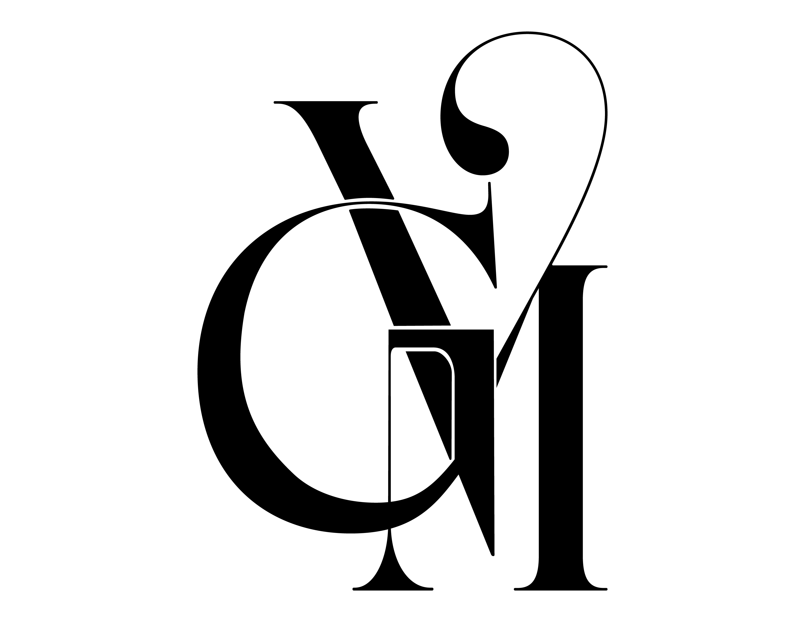

Diseño Gráfico e Ilustración
Lo clásico como base, el gesto contemporáneo.
Estética clásica, editorial y elegante con una actitud rebelde, artística y contemporánea. Esta página es la referencia visual del sistema: cada color, tipo, radio y componente que aquí ves responde a un token de DESIGN.md.
01
Colores
Dos tonos protagonistas ligeramente opacos, acompañados de negro y blanco. PrimarioSecundario NeutralSuperficie
Sodalite Blue · colors.secondary
Confianza, contraste e información.
El azul sodalita se reserva para títulos alternos, información, enlaces, líneas y bloques de contraste. Sobre él, el texto siempre en blanco.
13.2:1contraste AA del texto blanco sobre el color
#282867color secundario del sistema
on-*
Los tokens on-primary, on-secondary, on-neutral y
on-surface definen el texto sobre cada plano. Todos los pares superan el
contraste mínimo WCAG AA (4.5:1): el más ajustado es primary/on-primary con 9.4:1.
Los acentos protagonistas pueden alternar entre secciones; blanco y negro dan descanso y contraste.
Texto sobre {colors.primary} o {colors.secondary} siempre en blanco; texto sobre {colors.surface} siempre en negro.
No se introducen naranjas, verdes u otros colores de interfaz fuera de la paleta definida.
02
Tipografía
Dos familias con roles claros: CoFo Raffine para la identidad y Serenity para cuerpo, navegación y datos. La jerarquía se construye por escala, peso y espacio.
Identidad · CoFo Raffine
Diseño editorial
Logotipo, nombre, portadas, títulos principales y frases de gran escala. 5 pesos disponibles.
Secundaria · Serenity
Diseño editorial
Cuerpo de texto, navegación, fichas de proyecto, datos, botones y pies de imagen. 8 pesos + itálicas.
headline-display
CoFo Raffine · 88px · 400 · 0.95 · -0.01em
Títulos hero editoriales
48–88 pxheadline-lg
CoFo Raffine · 48px · 400 · 1
Portadas y grandes títulos
min heroheadline-md
CoFo Raffine · 36px · 400 · 1.1
Títulos de sección
subtítulo altoheadline-sm
CoFo Raffine · 24px · 400 · 1.2
Tarjetas y subtítulos
subtítulo bajobody-lg
Serenity · 20px · 400 · 1.6
Texto largo con comodidad de lectura, ideal para intro y narrativa de proyecto.
16–20 pxbody-md
Serenity · 16px · 400 · 1.6
Cuerpo estándar: párrafos, fichas y contenido general del portafolio.
basebody-sm
Serenity · 14px · 400 · 1.5
Notas de apoyo y descripciones secundarias.
14 pxcaption
Serenity · 12px · 400 · 1.4
Pies de imagen, datos, etiquetas y numeración. © 2026 — Gabriela Martínez Vega
12–14 pxlabel-lg
Serenity · 16px · 500 · 1.2
Navegación y botones
16–18 pxlabel-md
Serenity · 14px · 500 · 1.2
Botones compactos y etiquetas funcionales
14 px03
Retícula y espaciado
Retícula de 12 columnas en escritorio, 8 en tableta y 4 en móvil, con ancho máximo de 1440 px. Unidad base de 8 px; la retícula puede romperse de forma controlada.
Columnas · escritorio 12
Ancho máximo 1440 px, gutter 24 px, márgenes 48–72 px.
Redimensiona la ventana: la retícula pasa a 8 columnas (tableta) y a 4 (móvil).
Tableta 8 · Móvil 4
Gutter 16–24 px; márgenes 16–32 px; áreas táctiles ≥ 44 px.
Móvil
320–599 px
- 1 columna de lectura
- Márgenes 16–20 px
- Cuerpo mínimo 16 px
- Toque ≥ 44×44 px
Tableta
600–1023 px
- 4–8 columnas
- Márgenes 32–48 px
- Collages simplificados
Escritorio
1024–1439 px
- 12 columnas
- Márgenes 48–72 px
- Libertad compositiva
Amplio
1440 px+
- Contenido centrado
- Máx. 1440 px
- Respiración 96–128 px
04
Profundidad
La profundidad no depende de sombras, sino de capas editoriales: texto sobre color, marcos, líneas y bloques de color. El contraste entre planos se siente gráfico, no 3D.
Texto sobre color
Recortes, bloques y superposición controlada crean el plano sin depender de sombras.
Bloques de color crean el plano
El contraste entre planos debe sentirse gráfico antes que tridimensional.
Sombra baja
0 1px 2px · solo elementos interactivos
Hover
0 4px 8px · reservada a interacción
Marcos y líneas
Recursos preferidos sobre las sombras
05
Formas
Formas geométricas simples, marcos rectos, líneas finas y bloques sólidos. El contrapunto son las curvas del monograma GM. Se evita la estética "app": nada de píldoras ni radios altos.
Radios
Solo 0–4 px · nunca píldora
none · sm (2px) · md (4px) — la curva llega solo como excepción del monograma y los remates.
Estrella de cuatro puntas
Acento gráfico con moderación
Detalles como estrellas, líneas, marcos y numeración se usan como acentos, no como decoración permanente.
Bloques sólidos
Geometría simple
Rectos y geométricos; la circunferencia queda para usos puntuales y controlados.

06
Componentes
Botones, tarjetas, navegación, enlaces, íconos y fichas, construidos con los tokens del sistema. Pasa el cursor (o el foco) por cada elemento para ver sus estados.
Botones
Esquinas de 4 px, padding 16 px, tipografía label-lg. En hover se invierte el color o aparece la línea.
Navegación y enlaces
Navegación discreta en Serenity 16 px; el estado activo se marca con subrayado y rojo vino.
Enlace dentro del texto: ver caso de estudio completo conserva el mismo criterio.
Íconos
Lineales, a 20 px, sin contenedores decorativos. Cambian a rojo vino en hover.
Tarjetas de proyecto
Imagen y título como protagonistas; bordes finos, esquinas rectas. El hover revela los datos y desplaza la imagen.
Ficha de proyecto
Datos e información en tipografía secundaria, con numeración editorial.
Número
01
Categoría
Identidad editorial
Año
2026
Cliente
Editorial independiente
Franja editorial
Fondo negro con texto blanco para portadas dramáticas, citas o pie de página.
Diseño con concepto, estructura y sensibilidad visual.
El monograma GM funciona como hilo conductor: completo, ampliado, recortado o como marca de agua.
07
Sí y No
Guardarraíles del sistema: lo que protege la identidad y lo que la rompe.
Sí
- Usar rojo vino y azul sodalita como acentos protagonistas, con blanco y negro de descanso.
- Dar protagonismo a la tipografía con cambios fuertes de escala.
- Romper la retícula de forma intencional y controlada.
- Usar el monograma GM como firma, sello, recorte o gran escala.
- Narrar los proyectos: resultado y proceso.
No
- Introducir naranja, verdes u otros colores de interfaz como acentos permanentes.
- Sustituir CoFo Raffine y Serenity por Raleway, PT Sans u otras fuentes.
- Usar botones píldora, radios excesivos o estética de plantilla de app.
- Saturar todas las páginas de collage: alternar intensidad.
- Deformar, estirar o reconstruir el monograma GM.